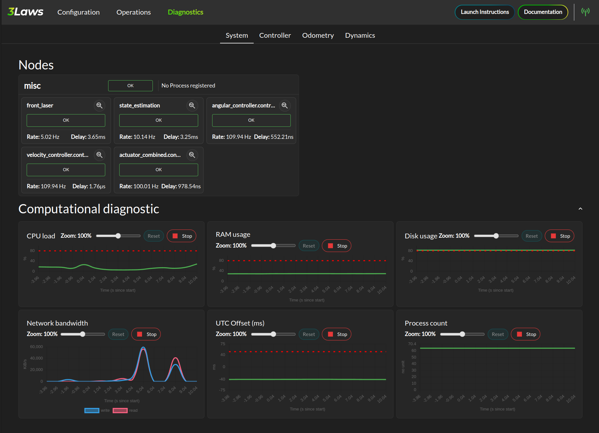
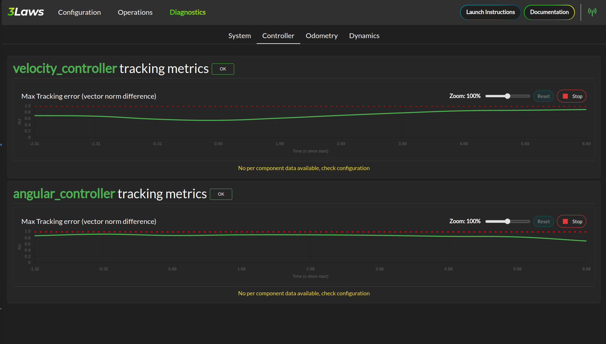
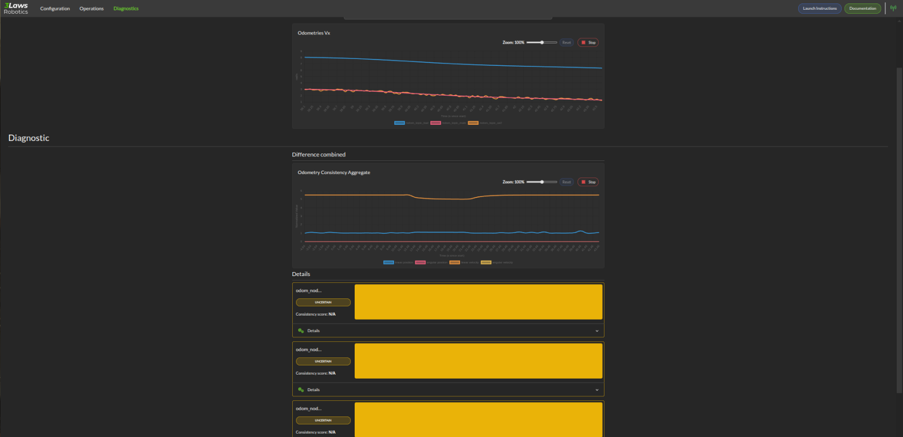
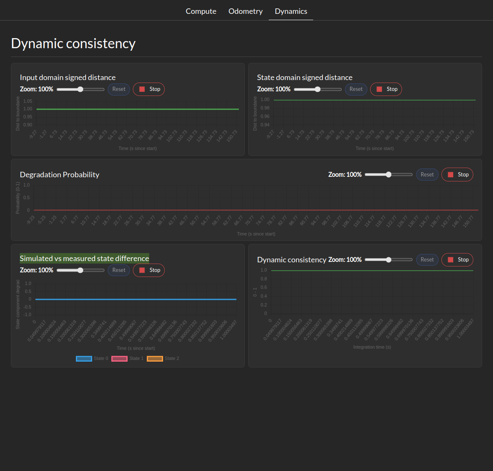

Diagnostics Page
The Diagnostic page provides a summary of the diagnostic metrics computed by the Supervisor. Presented as plots or status timeline, these metrics are useful for debugging and tuning the Supervisor’s parameters. Divided into sections, the Diagnostic page shows the following metrics:
System metrics
Controller metrics
Odometry metrics
Dynamics metrics
System Health metrics
{kind=link}
The System Metrics section shows the following metrics:
System health tree
CPU load
Memory usage
Disk usage
Network usage
Process counts
Control tracking health metrics
{kind=link}
This tab show for each controller the tracking error margin. Maximum tracking error needs to be defined for this tab to be populated. The tracking error margin is computed as the ratio between the actual tracking error and the maximum tracking error defined in the controller configuration. A value of 1 means that the controller is at its maximum tracking error, while a value of 0 means perfect tracking.
Odometry Metrics
{kind=link}
The Odometry Metrics section shows the following metrics if configured:
Odometry General: This let you visualize a component of the odometry across all available ROS odometry topics.
Diagnostic: This let you visualize a timeline of the status of each odometry. The timeline can have 3 colors RED for inconsistent, YELLOW for uncertain, and GREEN for consistent. A real-time consistency is also displayed
Dynamics Metrics
{kind=link}
The Dynamics Metrics section shows the following metrics if configured:
Input Domain signed distance: This let you visualize the signed distance of the input domain to it’s boundaries.
State Domain signed distance: This let you visualize the signed distance derivative of the state domain to it’s boundaries.
Degradation probability: This let you visualize the probability of the system being in a degraded state based on the distance between computed and measured state evolution.
Simulated vs measured state difference: This let you visualize the difference between the simulated and measured state at during the last integration period.
Dynamic Consistency: This let you visualize the consistency score of the dynamics model with the measured state in the last integration period.